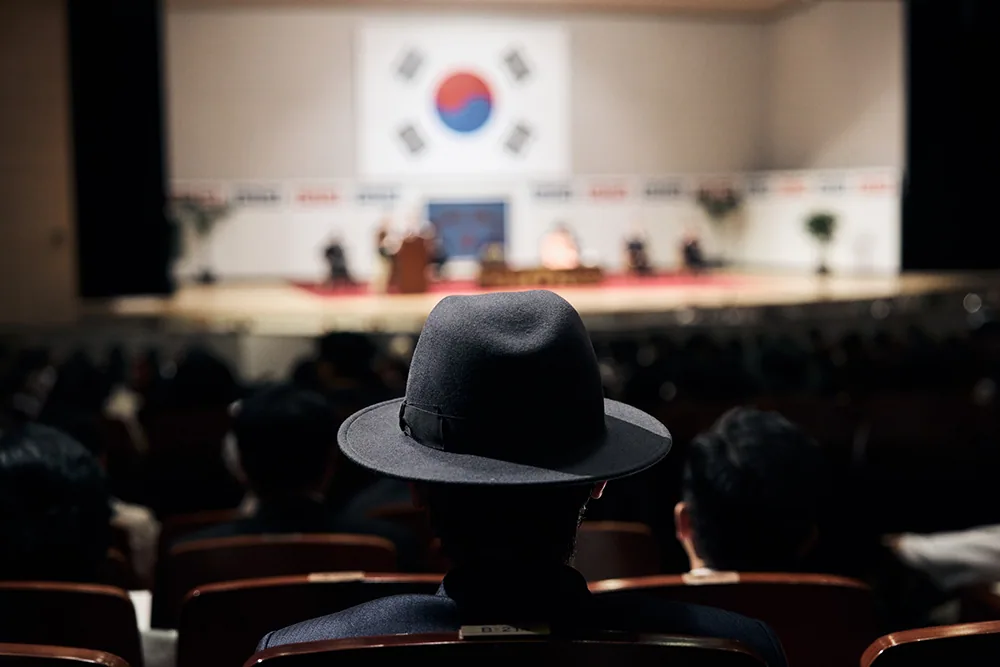
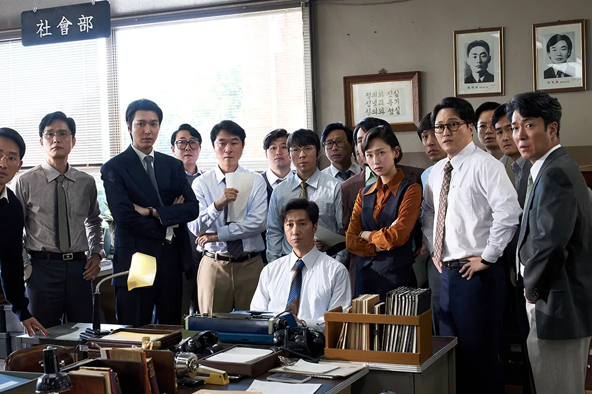
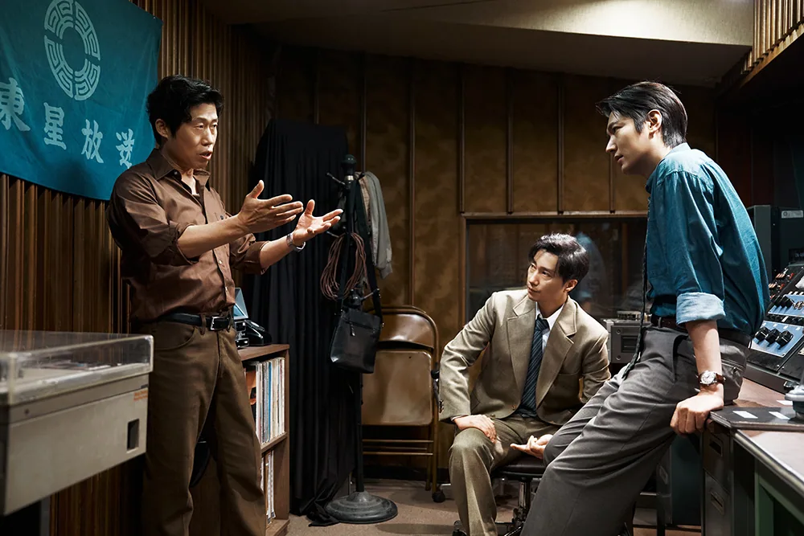
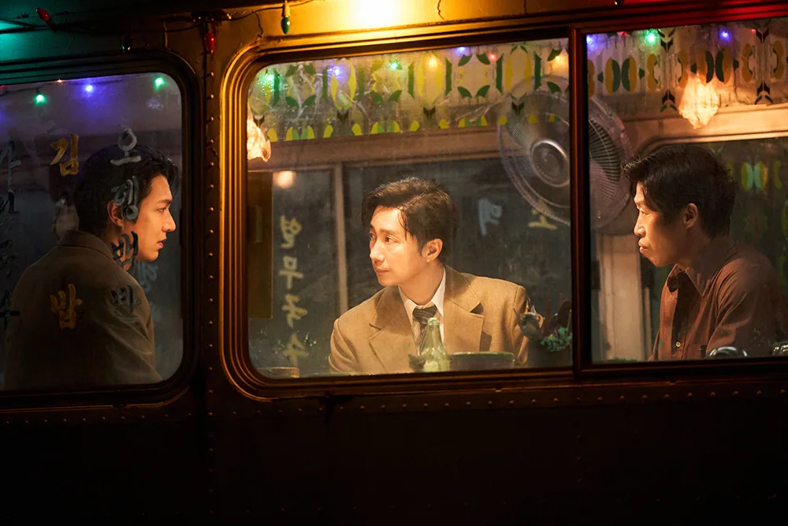

침체된 한국영화계에 한국 현대사가 신선한 수혈을 하고 있다. 10·26 사건을 모티프로 한 <남산의 부장들>(2020)에 이어 <서울의 봄>(2023)은 12·12 군사반란을 소재로 긴장의 하루를 솜씨 좋게 재구성한 바 있다. ‘Fact’와 ‘Fiction’을 결합한 이른바 ‘팩션영화’의 효용성은 1천312만 관객을 동원한 <서울의 봄>으로 단박에 입증됐다. 트렌디한 감각, 빠른 속도감을 지닌 이 영화의 장르적 장치는 당시의 시대를 경험하지 못한 현재의 관객에게까지 소구할 수 있는 도구로 작용했다. 앞서 현대사를 다룬 작품들이 주로 시대의 억압 아래 저항과 휴머니즘으로 묵직한 울림을 준 것과는 달리, 새로운 형태의 접근법을 지닌 시대극의 출현이었다.
<남산의 부장들> <서울의 봄>뿐만 아니라 앞서 <내부자들>(2015), 최근 시즌2가 공개된 디즈니+ 시리즈 <메이드 인 코리아>(2025~2026) 등을 만든 제작사 하이브미디어코프는 장르성의 바탕 위에 한국 근현대사의 굵직한 사건을 엮어 관객과의 접점을 꾀하며 ‘한국 근현대사 소재 장르영화’들을 확실하게 브랜딩하는 데에 성공했다. 9월 23일 개봉하는 허진호 감독의 신작 <암살자(들)>은 분명 그 연장선에서 읽힌다. 영화가 불러온 시대의 사건은 ‘1974년 육영수 여사 피격 사건’이다. 실제 사건은 공식 수사 결과와 별개로 ‘경호원 오발설’, ‘제3의 총탄설’ 등으로 의혹이 오래도록 남아 있는 사건 중 하나다. 이 의혹이 단순 음모론에 그치지 않고 공론화된 건 서울시경 감식계장으로 당시 수사에 참여했던 이건우가 1989년 월간 <다리>와의 인터뷰에서 “육 여사는 문세광 총에 죽은 것이 아니다”라는 증언을 했기 때문이다. 영화는 1974년 8·15 광복절 기념식에서의 육영수 여사 저격 사건 이후, 사건을 둘러싼 의혹과 이해관계에 장르적 장치를 더한다.
지금껏 <그것이 알고싶다>(SBS) 등의 다큐멘터리를 통해, 혹은 유튜브 영상을 통해 사건을 향한 의혹이 재생산되고 있지만, 한국영화에서 본격적으로 다뤄진 것은 <암살자(들)>이 처음이다. <서울의 봄>에서 경험한 성공전략을 더해 다분히 트렌디한 시대극으로 만들었다. 영화의 룩을 결정하는 촬영 이모개, 조명 이성환, 미술 김병한 트리오는 <서울의 봄>의 주요 스태프이기도 하다. 그들의 참여가 부여하는 기시감도 작지 않다. 총성과 함께 모티프가 된 사건의 재연, 이후 전개되는 미스터리 수사극의 긴장감이 더해지며 영화는 촘촘한 짜임새로 승부수를 던진다. 131분의 러닝타임이 짧게 체감되는 호흡으로, <서울의 봄>을 경험한 관객들에게는 다분히 낯설지 않은 형태의 전개다.
영화는 사건 자체보다 이후 제기된 수많은 가설에 초점을 둔다. 공식 기록에서는 사라진 두 발의 탄환을 찾는 과정을 미스터리 추적극으로 구성해 관객의 두뇌를 자극하는 전개 방식은 다분히 존 F. 케네디 암살 사건의 배후를 파헤치는 올리버 스톤의 영화 <JFK>(1992)를 연상케 한다.
작정하고 트렌디한 시대극의 완성
변주가 기대되는 지점은 역시 ‘허진호 연출’에서 전달되는 뚜렷한 색깔에 있다. 시작부터 빠른 템포로 내달리며 사건의 전개를 가속화하는 호흡은 <8월의 크리스마스>(1998), <봄날은 간다>(2001) 같은 허진호 감독 초기작의 호흡과는 간극이 커 보일 수 있다. 얼핏 의외의 선택이 아닐까 하는 의구심이 앞설 수 있지만, 그의 오랜 필모그래피를 들여다보면 적극적이고 폭넓은 수용성이 엿보인다. 허진호 감독은 앞서 <덕혜옹주>(2016), <천문: 하늘에 묻는다>(2019) 등 사극으로 영역을 확장하는 한편, 드라마 <인간실격>(JTBC, 2021), 온라인동영상서비스(OTT) 시리즈 <대도시의 사랑법>(TVING, 2024)으로 플랫폼과 장르를 넘나들며 다양한 시도를 모색해 왔다. 특히 직전작 <보통의 가족>(2024)은 미니멀한 세팅으로 한국 사회를 살아가는 한 가족의 부조리를 담아냄으로써 미스터리 형식의 묘미를 한껏 살린 허진호 감독의 새로운 장르적 시도가 빛을 발한 케이스다.
개봉을 앞두고 인터뷰에 응한 허진호 감독 역시 시사 후 반응을 체감하고 있다. 그간 자신의 인장처럼 수식되는 느린 호흡, 인물의 표정을 살피는 카메라와는 비교될 수밖에 없는 <암살자(들)>의 빠른 페이스를 언급하자, “맞다. 많이 달라 보였을 거다. 전작의 흥행 부진으로 작정하고 만들었다는 말까지 들었다. 작정한 게 맞다(웃음)”며 속도감의 변화를 인정한다. “이 프로젝트에 관심을 가진 게 벌써 10년이 넘었다. 처음 시나리오 심사를 가서 흥미롭게 읽은 프로젝트였는데 그때부터 끌렸다”며 오랜 시간 자신의 관심사 안에 있었던 작품이라 말한다. 허 감독의 전작 <보통의 가족>을 제작한 하이브미디어코프가 공모전 수상작이 된 시나리오를 픽업하면서 기획 개발을 함께 해 나갔다.
공교롭게도 허진호 감독은 데뷔작 <8월의 크리스마스>에서 <암살자(들)>의 모티프가 된 사건을 죽음을 앞둔 주인공 정원(한석규)의 대사로 들려준 적이 있다. “육영수 여사가 돌아가셨을 때도 맨드라미가 피어 있었고, 사람들이 모두 슬퍼했잖아.” 이것이 사건 당시 유년기를 보낸 허진호 감독이 이 사건에 대해 지닌 단상이기도 했다. 허진호 감독에게 각인되고 대한민국 전체에도 충격을 안겨 준 1974년 그날의 기억은 마땅히 이 영화를 연출한 동력이 됐다. “영화 속 철구(유해진)의 딸 미정이가 국민학교 5학년으로 설정되어 있다. 사건 당시 내 나이가 미정이와 같았다. 어린 나이에도 당시 어른들이, 전 국민이 슬퍼하던 주변 분위기가 내 기억 속에 또렷하게 남아 있었다.” <암살자(들)>의 인물들은 극화되었지만, 그 과정에서 허진호 감독이 겪은 기억이 접목된 부분도 적지 않다. “미정이 나이로 보면 영화 속 철구가 내 아버지와 비슷한 연배다. 철구의 나이를 그래서 내 아버지와 같은 1930년생으로 설정했다.” 김포공항 장면부터 사건이 발생한 경축식장인 국립극장, 기자들이 고군분투하는 공간인 동성일보 편집국 내부까지 영화에 사실적 온도를 더해주는 미술의 완성도에도 영향을 줬다. 1970년대의 리얼리티를 고스란히 불러온 이 영화의 룩은 뉴스, 다큐멘터리, 사진 등의 자료 외에도 상당 부분 그 시절을 경험한 허진호 감독의 기억이 길잡이가 되어준 결과다.


허진호 감독에게 생생하게 남은 1974년 그날의 기억이
<암살자(들)>의 1970년대 리얼리티를 되살린다
미스터리 장르 안에 숨겨놓은 진실 게임
허진호 감독은 이후 ‘지속적인 관심사’로 남아 있던 유년기의 기억에 연출자로서의 질문을 더한다. 특히 “미스터리한 사건 자체가 미스터리 드라마의 구조를 가지고 있었다는 데에서 영화적 관심을 느꼈다”며 “다큐멘터리, 책, 논문 등 다양한 자료를 찾아 나갔고 그 과정에서 이 이야기가 주는 매력을 거듭 체감했다”고 한다. 물론 영화로 만들고 싶은 욕심이 드는 한편, 고민도 만만치 않은 프로젝트였다. ‘내가 다룬다면 어떤 이야기를 해야 하지?’라는 고민. 다른 누구도 아닌 허진호 감독 자신이 미스터리한 사건의 전말을 찾아가야만 하는 이야기였다. “사건 이후에 나온 자료가 많아서 검토도 많이 했다. 총알 숫자도 다르고 해석도 다양했다. 하지만 확신을 가지고 ‘이거다’라고 할 수 있는 부분이 없는 사건이었다.” 특히 연출하는 과정에서 가장 주의한 것은 사건에 대해 단정 짓기를 피하자는 것이었다. “비극적인 사건인 데다 관련된 실존 인물들이 살아 있어 어떤 방식으로 접근해야 할지 고민했다”는 그는 “계속 스스로에게 질문하면서 대본을 완성해 나갔다”고 말한다.
허진호 감독이 찾은 해법은 자신이 경험한 시대의 익숙한 공기를 불러오는 일이었다. “막걸리 먹으면서 대통령 욕하면 잡아가던 시절이었다. 거짓말처럼 그런 일이 실제 일어났던 시대였다.” ‘막걸리 보안법’ 같은 말도 안 되는 일이 통용되던 시절을 경험한 허진호 감독은 이 미스터리한 사건의 열쇠를 풀기 위해 고군분투하는 다양한 인물들을 불러온다. 사라진 탄환을 찾는 과정에서 현장을 목격한 중부서 경감 철구, 공식 발표와 실제 정황 사이에서 의문을 포착한 사회부 부장 재환(박해일), 사건 현장의 혼란을 직접 마주한 뒤 취재에 뛰어드는 막내 신입 기자 영일(이민호). 세 사람이 영화의 전개를 책임지는 주축이 된다. 이들은 모두 자신의 직업적 신념을 바탕으로 당시 사라진 탄환에 대해 질문하고, 진실이 실종된 시대에 정의를 구현하고자 하는 이상적인 인물들이다. 허진호 감독은 “사실적인 자료를 바탕으로 인물들을 만들되 인물 각각의 구현에는 영화적인 상상력을 많이 접목시켰다”고 말한다. 장르의 묘미가 영화의 한 축을 담당하며 달려 나간다면, 외압과 침묵의 시대상 위에 진실을 좇았던 인물을 조명하는 주제의식이 또 하나의 중요한 축이 되어 호흡을 가다듬는 방식이다.
세 캐릭터가 진실을 좇는 과정에서 펼치는 방향성은 영화를 전진하게 하는 주요 축으로 작용한다. 돌아보자면 허진호 감독의 작품을 통틀어 이렇게 투철한 직업관을 바탕으로 인물의 신념과 가치를 조명한 경우는 처음이다. 한국 근현대사를 다룬 영화에서 사건의 주변부에 배치되는 캐릭터였던 기자가 주축이 되었다는 점도 감독의 전작에서 보지 못한 지점이다. “‘내가 추구하는 것은 애국이 아니라 진실이다’라는 말이 있지 않나. 최근 점점 진실이라는 게 물음표가 되어 가는, 더 이상 진실이 중요하게 여겨지지 않는 시기가 아닌가 하는 생각이 들었다. 이 작품을 통해 그런 원론적인 이야기를 해보자는 마음이 컸다.”
허진호 감독은 “불의와 싸우는 한 인물에 대한 이야기로 단순화시킬 수도 있지만 다양한 캐릭터들을 통해 당시에도 지켜졌던 가치가 무엇인지 보여주고 싶었다”고 말한다. 앞서 언급한 <JFK>가 차갑고 건조한 톤으로 사건을 쫓는 데 집중하는 영화라면, 허진호 감독은 인물의 내면을 살피는데 능한 자신의 연출 스타일을 접목시킴으로써 영화에 뜨겁게 끓어오르는 지점을 만들어낸다.


허진호 감독은 직업관이 투철한 철구, 재환, 영일을 통해 그 시대에도 지켜졌던 가치를 전한다
시대의 얼굴 클로즈업 하기
허진호 감독은 시대의 얼굴을 잊지 않고 클로즈업한다. 장르의 긴장감 한가운데 배치된 시대의 표정은 <암살자(들)>을 보고 나서 가장 강렬하게 남는 잔상이다. 가령 체제에 복무하던 철구가 국기에 대한 경례를 거부하고 돌아서는 장면은 빠르게 달리던 영화를 멈춰 세우고 지금의 관객에게 질문을 던진다. “해가 지는 때라 실제 촬영은 30분 정도밖에 하지 못했다”는 촬영 비하인드에도 불구하고 철구를 연기한 유해진은 뜨거운 눈시울로 억압된 사회의 모순에 처한 국민의 절망감을 여실히 보여준다. 허진호 감독은 그 촬영으로 “주어진 것에 머물지 않고 역할을 자기화하는 유해진 배우의 표현력이 지닌 힘”을 느꼈다고 말한다.
영화의 핵심을 관통하는 또 하나의 주요 장면은 동성일보 기자들이 참여한 ‘자유언론실천선언문’ 낭독 장면이다. “조선일보, 동아일보 등 신문사 기자의 해직, 광고 없이 발행된 신문을 봤을 때를 여전히 기억한다”는 허진호 감독은 억압의 한가운데 끝까지 진실을 구하는 기자 정신에 재환 역 박해일의 꼿꼿한 폼을 더해 역동적인 장면을 완성해 낸다. <덕혜옹주>에서의 협업으로 박해일의 연기 호흡에 익숙한 허진호 감독은 다시 한번 완급조절에 능숙한 배우 박해일의 파워를 실감했다고 말한다. “진실을 찾는 역할이 어떻게 보면 단선적으로 보일 수 있는데, 박해일 배우는 힘을 주지 않고도 그 인물이 가진 힘을 표현해 낼 줄 아는 배우다.”
시대의 얼굴이 주는 힘은 주요 캐스팅에만 국한되지 않는다. <암살자(들)>은 작은 역할 하나까지도 익히 알려진 주조연급 배우들의 캐스팅으로 무게를 더한다. 대사와 출연 분량은 적지만 극의 핵심을 관통하는 재일교포 2세 문태광을 연기한 박정민의 참여는 영화에 상당한 힘을 실어주는 역할을 한다. “동료 배우들의 참여가 이어지면서 한 장면이라도 함께하고자 하는 배우들이 적지 않았다”고 할 만큼 캐스팅 과정에서 배우들이 보여준 호응은 상당한 수준이었다. 물론 화려한 카메오는 양날의 검이 될 수도 있다. 참여한 배우들의 모습이 단순한 과시로 보이지 않게 하는 건 결국 연출자의 몫이다. 카메오 출연을 두고, “캐스팅에 신중한 접근과 주의를 기울였다”는 허진호 감독은 “짧게 나오는 역할이라도 배우들과 두세 번씩 직접 미팅을 진행했다. 각 등장 신에 대해서 충분한 대화를 통해 배역과의 접점을 만들어 나갔다”고 말한다.
제2의 <서울의 봄>은 올까?
<암살자(들)>이 불러온 1974년 그날, 사라진 총알의 향방은 지금의 관객에게 어떻게 다가갈까. 허진호 감독에게 이 사건이 지닌 현재와의 접점, 지금의 관객과 함께 보아야 할 지점에 대해 물었다. “영화를 만들면서 계속 질문했다. ‘진실이라는 게 뭘까?’에 대해서.” 그는 폭력과 억압이 가득했던 시대상에서도 “직업적 소명의식을 가지고 끝까지 진실을 찾았던 그때의 사람들, 그 시대정신이 지금도 여전히 유효하다”고 힘주어 말한다. “당시와 마찬가지로 지금도 우리는 자신의 이익 때문에 서로 갈라진다. 자신의 선입견이나 혹은 집단 편향성에 쉽게 영향을 받는다. 그런 가운데에서 진실을 찾는다는 건 그때도 지금도 어려운 일이고 여전히 우리를 뜨겁게 하는 질문이다. 이 영화가 분명 그 부분에 대해 질문을 던질 수 있으리라고 생각한다.”
한국 현대사의 굵직한 사건이 모티프가 되었다는 점에서, <암살자(들)>은 분명 장르영화로서의 성과, 그 이상을 기대하게 한다. 제목에 사용된 ‘(들)’을 찾아가는 과정을 통해 미스터리 장르물로 승부수를 던진 이 영화가 관객에게 기록적 호응을 얻은 <서울의 봄> 이후 또 한번의 반향을 가져올지 결과를 기다려 볼 차례다.
<암살자(들)> 메이킹 필름